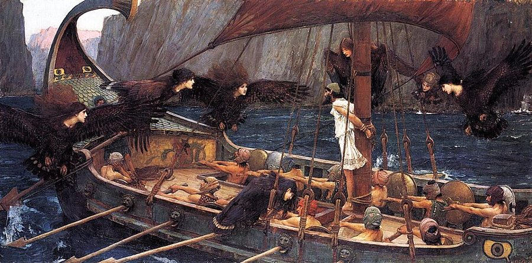
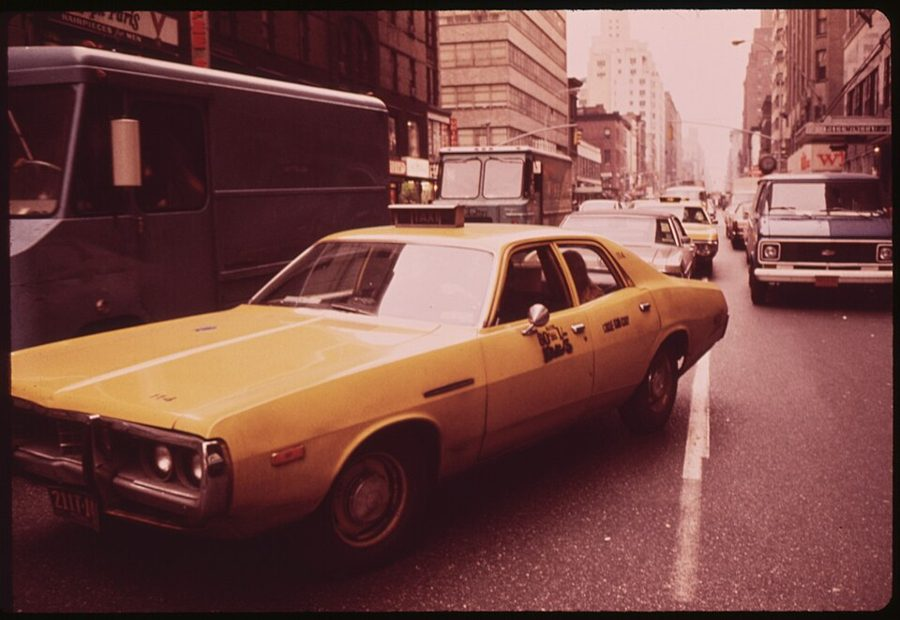

add some spice to one’s life
… to add some spice to my life …
给生活添点滋味
作者在开玩笑：敌人够多才不无聊，他还嫌少，因为他「很少看电影，需要娱乐」。
第三部的篇首加第 12 章，是全书口气最私人的一页。作者拿荷马史诗里耳朵塞蜡的水手开场，讲自己开车时的火气、不读批评的理由、交易室里静音的电视，中间立起一个他叫「维特根斯坦的尺子」的概念。第 12 章是一个好笑的故事：一位期权专家因为出租车多开了一个街口，第二天系着同一条领带去上班；再接上史金纳的鸽子。读的时候抓一条线：知道和做到之间隔着什么。

第二部（第 8–11 章）讲幸存者偏差、数据挖掘、非线性，最后落在我们的脑子怎样误读概率。这一页进入第三部，也是全书最后一部，作者说这一部是全书的结论，讲对付不确定性时「人」的这一面。§2 他回提第 7 章 §8 那位言行不一的波普尔；§7 回到第 3 章 §13 的噪声和信息、第 11 章 §16 答错题的医生；§3 预告的「十个西格玛」要到第 13 章才讲。
§6 作者讲史金纳的鸽子实验，细节和史金纳 1948 年的原论文有出入（食物怎样送、多少只鸽子养成了动作），心理学界后来对这个实验的解释也改过。读的时候先记下书里的说法，对照在页末。
一个懂概率的人，为什么照样会被运气牵着走，他又该拿自己怎么办？
读的时候带着这几个问题。不用先找答案，读完回来对照「检查一下理解」。
这一页分两段。前四节是第三部的篇首，像一篇短序：§1 一个荷马的故事；§2 作者的自白，读着像闲聊（开车、骑车、敌人、批评者）；§3 突然换成一个抽象概念，中间又跳到辛普森案的一位陪审员；§4 回到交易室的电视，再插一段听不懂的粤语演讲。从译本：「這一部，作為本書的總結」起是接缝：先交代这一部的用意，再是第 12 章的章旨，译本在这里出现新的章题。第 12 章本身是一条直线：一个故事（§5 出租车、领带、眼镜、一位好赌的同事），一个实验（§6 鸽子），一个办法（§7）。§7 从第 3 章的噪声、一位被追的哲学家、第 11 章的医生说起，标题指向第 3 章引过的一位古人，读者可能已经忘了。
这一页是第三部「在耳中塞蠟」的篇首（§1–§4）加第 12 章（§5–§7），原书和译本都是这 7 节，节号照本站给第 12 章编的。粗体是本站给的节名，后面是档和译本字数；下面是译本的小标题和这一节在译本电子书里开头的几个字（搜它就能跳过去），再下面是英文原文的开头。「先读」是这一章的骨架，「有空」好看、跳过不丢线，「可跳过」读不读都行。读完打个勾。
先把这一页用到、作者默认你懂的几个概念讲一遍。讲的是概念本身，作者拿它推出什么，读原书时自己看。别页讲过的概念，点链接过去看。
你知道自己到时候会顶不住，就趁现在还清醒，提前把路堵上：把零食放到够不着的地方，发工资当天自动转一笔去存款，给自己定「晚上十点以后不看工作群」。哲学和行为经济学把这叫自我约束或预先承诺，奥德修斯的故事是它最有名的比喻。
它和「意志力」正相反：不指望到时候忍住，而是让到时候根本没得选，或者选错的代价变高。它有两种做法：塞住耳朵，让诱惑根本到不了你面前；绑住手脚，诱惑来了你也动不了。程序员熟悉的版本是代码仓库的强制检查：不靠每个人自觉跑测试，没通过就合不进去。
在这一页：§1 的水手和奥德修斯正好是两种做法。§4 的静音电视、§7 的报表门槛和巧克力，读的时候看作者用的是哪一种。
这是作者起的名字，不是哲学界的通行术语。拿一把尺子量桌子，读数同时取决于桌子和尺子。尺子要是靠得住，读数说的是桌子；尺子来历不明，一个古怪的读数更可能说明尺子有毛病。
概率论里，看到证据之前你对一件事有几分相信，叫先验（prior，先验概率）。这里的「事」就是「这把尺子靠得住」：先验越低，同一个读数里关于尺子的信息越多，关于桌子的越少。值班的程序员都懂：一个从不误报的告警响了，先去查系统；一个一天响二十次的告警响了，先怀疑告警本身。它和条件概率和基础比率的道理相通。
在这一页：§3 作者用它说明为什么不读不请自来的评论，并拿网上书评和辛普森案的一位陪审员举例。第 13 章还会用到它。
两件事一起出现，不等于一件导致另一件。样本越小，巧合越容易长得像规律。算一笔：一个人每天随手做或不做十件小事（戴不戴眼镜、走哪个门、系哪条领带……），每件各有一半的日子做。连着五个赚钱的日子，某一件事碰巧五天都做了，单看一件的概率是 1/32；十件里至少有一件这样，概率约 27%。
统计学用假设检验来防这种事：先假设「两者没关系」（原假设），看数据要极端到什么程度才推翻它。会犯两种错：其实没关系却说有，是第一类错误（误报，把巧合当规律）；其实有关系却没看出来，是第二类错误（漏报）。
在这一页：§5 作者拿眼镜和收入举例，说样本只有一次；§6 他提到这两类错误，书里的用法和这里的定义不一样，页末再说。
心理学家史金纳的经典做法：动物做了某个动作，马上给食物，这个动作就会越做越多，叫操作性条件反射，给食物这一步叫强化。他用的实验箱后来叫斯金纳箱：一个按钮或拨杆，一个自动送食的装置。
要点在「紧挨着」：大脑记住的是「我刚做了什么，好事就来了」，并不核对是不是因为这个动作。所以食物哪怕和动作毫无关系、到点自己掉下来，那一刻恰好在做的动作也会被强化，下一回食物来时它更可能正在做，越巧越像有关系。心理学管这叫「迷信行为」。人身上的版本：罚球前一定要拍三下球，考试必穿那件衣服。
在这一页：§6 作者就引这个实验。读到时留意书里说食物是怎样送的、多少只鸽子养成了动作，页末对照原论文。
按在书里出现的顺序排，标题前是节号。只讲到读懂这一页需要的程度。
《奥德赛》是古希腊的荷马史诗，讲奥德修斯打完特洛伊战争后漂泊多年回家。第 12 卷里，女巫锡西（Circe，大陆通常译喀耳刻）预先告诉他：海妖（Sirens，大陆译塞壬）的歌声会引水手跳海送命。他让水手用蜡塞住耳朵，自己被绑在桅杆上听。夏里特和西拉是同一卷里的漩涡和海怪（Charybdis、Scylla，大陆译卡律布狄斯、斯库拉）。第三部的标题「在耳中塞蠟」就从这里来，作者把「绑在桅杆上」和「耳朵塞蜡」分成两种人。
书里没说「尺子」出自维特根斯坦哪部著作，这个名字是作者给自己的想法起的，本站正文用大陆的译名「维特根斯坦」。辛普森案：前美式橄榄球明星 O. J. Simpson 1994 年被控杀害前妻和她的朋友，1995 年刑事审判判他无罪。作者在第 11 章 §14 已经谈过这桩案子里的概率，§3 是「再拿它来说」。
CNBC 是美国的财经新闻电视台，交易室里常整天开着，播评论员和公司老板的访谈。柏格森在《笑》里的核心看法是：人像机器一样僵硬、不随机应变时就显得好笑。作者说柏格森讲过一个「一本正经的绅士正要踩上香蕉皮」的著名场面，这是作者的转述。Graham Greene（1904–1991）是英国小说家，作者说他拒绝上电视，名嘴一静音就成了小丑是原因之一。

瑞士信贷第一波士顿（Credit Suisse First Boston）是瑞士信贷旗下的投资银行，作者早年在那里做交易员。公司在曼哈顿中城的公园大道附近，不在华尔街：「华尔街」是整个美国金融业的代称。曼哈顿的东西向街道按数字编号，越往南号数越小，从 74 街打车往南到 53 街，多开一个街口就到了 52 街。场内交易员（pit traders）是交易所大厅里喊价、打手势成交的交易员，作者叫他们「蓝领」，拿他们当迷信的典型。
作者引的是史金纳 1948 年的论文〈鸽子的「迷信」〉，发表在《实验心理学杂志》上，署名单位是印第安纳大学；他同年转到哈佛，作者叫他「哈佛心理学家」也说得过去。实验细节和书里的出入，留到页末「今天怎么看」。§6 的拉丁文格言出自维吉尔《农事诗》第 2 卷第 490 行，原句是 Felix, qui potuit rerum cognoscere causas，意思是「能懂得万物之因的人是幸福的」，书里漏了 rerum（万物）。
作者说皮罗被牛追。古代传记（第欧根尼·拉尔修《名哲言行录》第 9 卷）里是一条狗冲他扑来，他吓坏了，对批评他的人说，人很难把人性完全剥掉。标题里的斐洛斯特拉图斯是第 3 章 §13 引过的古人：神看见未来，凡人看见现在，智者看见即将发生的事，作者在那里讲噪声和信息。纪念斯隆-凯特琳癌症中心在曼哈顿上东区，是美国有名的癌症治疗和研究机构。
读英文原文时值得停一下的词和句：交易员的行话、作者的反话和双关、熟词生义。灰色斜体是原句里连续的几个词，在英文电子书里搜它就能找到；标「每个字都认识」的，是每个词都眼熟、合起来意思却变了的，最容易读错。点「记下」收进词本。
对着译本读这一章时，下面这些地方会把人读歪。方框里是译本的原句，在译本电子书里搜它就能找到；灰色斜体是英文原文那一处。只收意思错了、反了、漏了的，措辞上的出入和台湾用语不收。全书的勘误汇总在译本勘误。
… Odysseus, forewarned by Circe, contrives the …
译本：「女妖錫西（Circe）事先警告」
Circe 是《奥德赛》里另一个故事的女巫，是她预先告诉奥德修斯海妖有多危险。译本同一段把海妖（sirens）也叫「女妖」，读来像是海妖里的一个自己泄了密。
… grab the salt shaker from the hand …
译本：「沒有接好別人遞過來的鹽瓶」
原文说的是一条黎凡特的禁忌：不从别人手里直接拿盐瓶，否则两人会闹翻。译本变成「没接住」，成了笨手笨脚的事，读不出这是一条有意遵守的规矩。
… passed on for a few dozen centuries …
译本：「流傳了十幾個世紀」
a few dozen centuries 是几十个世纪，也就是几千年。作者说这些地中海东岸的民间信念极其古老，译本把时间缩短到一千多年。
… quite a difficult matter when we have …
译本：「真的很難做到，所以有句話說」
原文是：我们的文化里有「能懂得原因的人是幸福的」这样的格言，难怪不找原因这么难。格言是难的理由之一。译本用「所以」，读来像是因为难做到，才有了这句格言，因果反了过来。
… I offered no solution to the problem …
译本：「我提不出解決方法」
offered 是过去时：前面第 3 章只讲了噪声和信息在技术上的区别，没讲怎么做到，现在该讲执行了。译本读来像作者承认自己根本没办法，可这一节接下来讲的正是他的办法。
… divorce between my brain and my appetite …
译本：「把大腦和食慾分離開來」
divorce 是名词，说的是现状：一碰到巧克力，他的脑子和胃口就意见不合，这是问题。办法是下一句：桌下不放巧克力。译本读来像「把两者分开」是他采取的办法。
… gym outside of the New Year’s resolution …
译本：「把上健身房列為新年新希望」
outside of 是「在……之外」：说教的人劝他平时也去健身房，不要只在新年许愿那几天去。译本成了「把去健身房列为新年愿望」，正好反了。
读完这一章再看。下面是作者在这一章里的主张，由本站按主张之间的逻辑重新组织，不按原书的顺序；每条后面是节号，拿不准就回书里那一节再读一遍。
他说自己只聪明到能看出自己容易被随机性愚弄，并且情绪很重；他和书里取笑的每个人一样，甚至可能更糟，因为信念和行为之间也许是负相关（像波普尔本人）。差别只在他试着意识到这一点：脑子分得清噪声和信号，心分不清。
§2他说自己不够聪明也不够强，去和情绪硬拼；而且他相信（I believe）自己需要情绪来想点子、来干活。所以学水手不学奥德修斯：开车不和人对视，骑车时把骂人的司机当成别的动物，不读批评者和记者的文字，交易室的电视开着但静音，让名嘴显得滑稽。
§1 §2 §4这是他的「维特根斯坦的尺子」：不信任尺子时，量桌子也在量尺子。他说匿名网友的评论全是关于本人的，内行的才是关于书的；陪审员一句「血不够多」，说明的是他推理的本事。可他承认自己的情感系统不懂这把尺子：恭维不管谁说的，听着都舒服。
§3他发现自己这个期权专家也长出了赌徒的小动作：同一个路口、同一条领带、戴上就舍不得摘的眼镜。他原以为迷信是文化，学问长了靠理性就能消掉，结果相反；他说这几样没有一点文化的成分，所以一定是生物性的，并拿史金纳的鸽子作证。他说人天生不把两件事看成互不相干，总急着找因果。
§5 §6他举例：赚 10 万美元时策略真有效的把握是 2%，赚 100 万时是 99%，可他照样为噪声狂喜、为噪声沮丧，像第 11 章那位明知 2% 却按 95% 治病的医生。所以他不看没过门槛的业绩报告，桌下不放巧克力；说教没用，人是需要低级把戏的动物。抽烟的护士是例子。
§7合起来：在全书的结论部分，作者先把自己放进被告席：懂概率不等于照概率活。别指望靠意志赢过情绪，去安排一个让情绪没机会出手的环境。
I am just like every single character whom I ridiculed in this book.— §2。本站译：我和这本书里我取笑过的每一个人一样。
自嘲，但不是客套。关键是 every single：前面十一章骂过的记者、MBA、经济学家、被运气捧起来的交易员，一个不落。容易读成谦虚话，要连着后两句读：他说自己可能更糟，差别只在他试着意识到。译本：「我其實和我在本書取笑的每一個人一樣」意思到了。
It is the execution that is the problem, not the absence of knowledge.— §7。本站译：问题出在做到，不在不知道。
一句下判断的话，第三部的要点压在里面。关键是 execution：知识之后还有一步。容易被读成「知识没用」，可他前面十一章讲的正是知识；他说的是光有知识不够。译本：「問題只是出在我們沒去做，不是不懂」把 execution 译成「没去做」，读着像偷懒，原文更像「做不到」。
这本书 2004 年出第二版，书里讲的多是 1980–2003 年的事。下面挑出这一页里能被后来的研究或事情检验的说法，分「书里 / 当时 / 今天」几栏，并给一个结论。结论判的是标题里「书里的说法：」后面那一句。全书的这一节汇总在今天怎么看。
读完作者的主张，再看它站不站得住。每一块摆出三样：主流怎么看，作者怎么看，本站的评论。最后一句是本站对这一页的总体判断。
主流看法：这是行为经济学和哲学里很主流的想法。挪威哲学家 Elster 1979 年的一本书就叫《尤利西斯与海妖》，讨论人怎样预先约束自己。Ashraf、Karlan 和 Yin 2006 年在菲律宾做的实地实验，论文题目就叫「把奥德修斯绑在桅杆上」：给储户一种到期前取不出钱的账户，抽到的人里不到三成愿意开，一年后这组的平均存款明显高于对照组。
作者的看法：他斗不过情绪，解法不在驯服心，而在规则：不看没过门槛的报表，桌下不放巧克力；人需要低级的把戏，不需要说教。§1 §7
本站的评论：这是这一页最值得带走的东西，而且他把自己也算进去，比全书任何一处都谦虚。要补一句：规则本身是脑子在冷静时定的，门槛定在哪、什么算噪声，还得靠 §7 他说的那套计算。规则替代不了知识，它让知识在情绪上头的时候也能起作用。
主流看法：在概率论里这是很正常的贝叶斯推理：一条消息该给多大分量，要看你对来源有几分信任，同一个读数会同时修正你对被测对象和测量工具的看法。基础比率那一套和它道理相通。
作者的看法：除非来源资格极高，一句评论透露的多半是评论者本人；匿名读者的评论全是关于他自己的。所以他不读不请自来的评论。§2 §3
本站的评论：单拿一条匿名评论，作者说得对。但「全是关于他自己」说过头了：一百条匿名评论合起来，就不全是噪声。更要小心的是用法：「只听我敬重的人」，谁来定敬重谁？拿这把尺子挡掉所有批评，尺子就成了耳朵里的蜡。他在 §3 自己也说，这是用来判断「判断类」的话的。
主流看法：「把巧合当因果」的倾向有演化上的道理。Foster 和 Kokko 2009 年的模型说明：只要偶尔一次认对了好处很大，自然选择就会偏爱「宁可多认」的策略，哪怕常常认错。但迷信的具体内容明显受文化影响。
作者的看法：他的路口、领带和眼镜没有一点文化的成分，所以迷信一定是生物性的；科学家也知道拒绝一个假设在情感上更难，他说这就是第一类和第二类错误。§5 §6
本站的评论：倾向是天生的，这一点他说得对，也有研究撑着。「没有文化成分」只能说他那几样迷信的内容是自己碰出来的；他在 §5 举的盐瓶、敲木头，自己就说是从东地中海的根上来的。另外第一类、第二类错误说的是误报和漏报，和「拒绝假设更难受」不是一回事，读到时别照书去理解这两个词。
本站的总体看法：这一页的论证不靠数据，靠自白和故事，但它讲的事今天站得住：懂概率和照概率行事是两回事，靠规则比靠意志可靠。史金纳实验的细节和「迷信与文化无关」要打折扣，维特根斯坦的尺子好用，别拿它挡掉一切批评。
先在心里答，再点开。答错的那题，回书里把对应那一节再读一遍。
水手耳朵塞了蜡，根本听不见；奥德修斯听得见，靠绳子和水手看着才没跳海。作者说奥德修斯是神话人物，他不是：他只能让自己听不见，比如不读批评、把电视静音。
作者的说法是：来源越靠不住，一句评论透露的越多是评论者本人；网友那句主要在说网友，专家那篇主要在说书。你对专家这把「尺子」的先验高，读数就多半归给桌子。
他说这种关联虚假得不能再虚假，样本只有一次。他精通假设检验，可这种天生的「统计本能」不受专业知识管束，他是不自觉地戴着的。
食物来的那一刻鸽子恰好在做某个动作，这个动作就被强化，下一回食物来时它更可能还在做，越巧越像有关系。作者拿它说明把巧合当因果不是文化教出来的，动物也会。
市场的波动随手就能造出一笔 10 万的盈利，却很难凭运气造出 100 万，所以数越大越像信号。两个数是作者举的例子，书里没给算法，也没说策略平时波动多大，算不出来；道理可以对照噪声和信号。
用规则绕开情绪：业绩报告没到预先定好的门槛就不看，就像交易桌下不放巧克力。他说大多数人都知道该怎么做，难在做到；人是需要低级把戏的动物，说教解决不了执行。
用一句话说这一页：
想一想：你有没有一件「知道该怎么做、就是做不到」的事？你是靠意志硬撑，还是改过环境（把零食放远、把手机放在另一个房间、关掉某个通知）？哪一种撑得更久？
读过又忘了，从这里想起来。挑的是这一页最值得记住的故事和说法，不按原书顺序；每条后面是节号，想细看就回书里那一节。全书各页的这一节都收在全书回顾。
一句话：懂概率不等于照概率活：作者不和情绪硬拼，而是定规矩，让情绪没机会出手。
奥德修斯被绑在桅杆上听海妖唱歌，水手耳朵里塞着蜡。作者说他不是神话英雄，只配当水手：不读批评，不读记者，耳朵里塞蜡。
§1不信任尺子时，用尺子量桌子，也是在用桌子量尺子。一句评论，来源不够格时，说的多半是评论者自己。
§3交易室的电视整天开着 CNBC，但声音全关掉。只看见嘴在动、脸在激动，名嘴就成了小丑。
§4听不懂话的司机多开了一个街口，那天作者赚了大钱。第二天他不自觉地让司机停在同一个路口，到了电梯镜子前才发现，领带也是前一天那条，还带着咖啡渍。
§5史金纳让食物和鸽子的动作毫无关系地掉进箱子，鸽子却各自跳起转圈、摆头的「舞」，好像是它们求来的。
§6作者明知小盈小亏是噪声，还是会为它高兴、沮丧。办法是业绩没到门槛就不看，就像交易桌下从不放巧克力。
§7